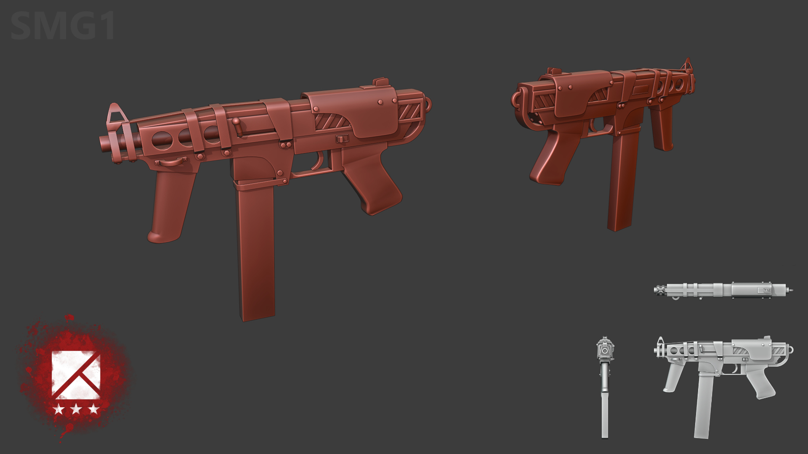

Empires UE4 September/October 2020 Update
Project Update - Roy Awesome
Hey everyone! Combined update for September and October this month. Due to the nature of the all-volunteer team and a number of us having day jobs, we ran into some issues getting an update out last month. However, progress continues and we’ve had a lot of discussion for the post 1.0 future of this project.
We are working on a new website, one that will allow us to post updates more frequently and support the growing project (and maybe finally fix https too). It’s in progress and we hope to have it done in the next few weeks.
Also, we are discussing what direction this project is going to go after we’ve completed porting all of the features from the source mod to UE4. We’ve been discussing potentially creating a “Sequel” of sorts, progressing the story 10-20 years and seeing where our factions are going. We’ve talked a lot about changing up a bit of the design for the Brenodi Empire and Northern Faction, as well as discussed a structure that will allow us to do new factions in the future. While nothing is planned, we are building a foundation for another 15+ years of development and discussions like this need to happen to do that.
As always, we are looking for help. Right now, the biggest help would be an animator who knows their way around the Unreal Engine animation blueprint system. We are heavily constrained by that at the moment, and if anyone knows someone, send them our way :)
Art
Weapon Design - Mayama
I managed to make low poly models for all primary and secondary NF infantry weapons. The pictures posted here are not final but should give you a good idea in which direction the art style is going. I also started to make NF infantry models but I don’t have anything presentable right now.

I also textured one of the SMG’s so we have something for discussing color schemes.

The team favourite is currently a mix between the bright red and the muted brownish version. I also added some surface detail and reduced the shininess that made it look like a plastic toy.
Programming
Gameplay Programming - Roy Awesome
This month I worked on Crouching and Squads. Crouching was a fairly simple addition, given that everything was mostly set up for it already in the engine. I simply hooked up a gameplay ability for it, and it worked. I also investigated ‘Crouch Sliding’, or going into a short slide if you are sprinting and then crouch. Almost every modern shooter today has this mechanic, and I think it would be very good for Empires. I plan on making it a toggle, so that if players don’t like it they can turn it off.
A big thing I am working on as well is Squads. In the source mod, Squads were very hard coded in what they can do, and their functionality is extremely limited. One of the pillars of this project is to get away from extremely hardcoded gameplay functionality and script as much as possible. To achieve this, Squads needed a very dramatic rethink on how they were implemented.
So, I’ve basically upgraded squads from little more than a number to a first class object in the game world. Squads are created (and destroyed) dynamically, rather than source mod’s 26 static squads. They can be named (and renamed), and can be locked. The biggest thing is that Squads will be getting an Ability System component for storage of attributes and the execution of abilities.
I haven’t talked much about the Ability System in these updates, but it’s a really powerful unreal engine feature we are leveraging to produce a lot of content very fast. Abilities are scripted, data driven units of gameplay logic that can be added to any object that has an Ability System Component, or ASC. Things driven by the ASC can also hold “Gameplay Effects”, which are kinda like buffs and debuffs, and “Attribute Sets”, which is a set of gameplay stats that can be modified.
By giving Squads an ASC, we open up a very wide world of possibilities for what squads as a gameplay object can do. The 1.0 goal is to create the current ability behaviors for Squads, which is the generation of squad points and then the spending of those squad points on a small set of squad abilities. However, we can get very creative in this space with a full ASC powering the squads. Perhaps we want to create a ‘Squad Wages’ system to replace squad points, which allows spending those wages not only on abilities, but maybe vehicles as well? We’ve talked about making abilities powered by commander placed buildings, like an artillery building that squad leaders can spend their points to use to power the squad artillery ability. This would be interesting as it adds a new layer of interactability on the battlefield. With the capability to give Squads any Ability, we can experiment and grow this side of the game with technical ease.
Recently, I started experimenting with a ballistics system to simulate projectile travel for guns. It’s looking pretty good for a solid projectile system with the potential for travel time, gravity, and even more advanced simulations such as air pressure, wind resistance, ricochet, and penetration. While we may only use some features for certain guns (wind resistance would probably work best for snipers, but not for SMGs), the options afforded to us let us create a very interesting and varied infantry combat sandbox. Feel free to give feedback on what you would like to see in the infantry combat gameplay, knowing that such features could be given to certain guns!